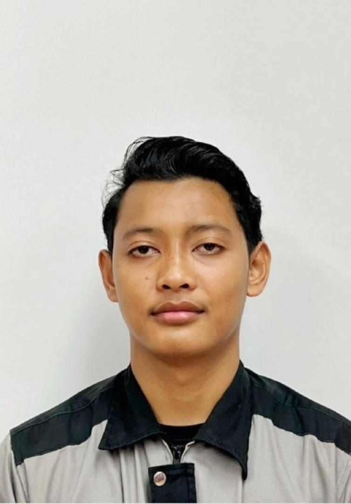

About Me
Industrial Electronics Automation Undergraduate at UMPSA

Personal Statement
I am an Industrial Electronics Automation undergraduate at Universiti Malaysia Pahang Al-Sultan Abdullah (UMPSA). I work with PLC programming, HMI development, machine troubleshooting and IoT system integration. I enjoy solving engineering problems and learning from experienced professionals.
Background
My interest in electronics started at Kolej Vokasional Slim River, Perak, where I completed the Diploma Vokasional Malaysia (DVM) in Electronic Technology and earned the Malaysian Skills Certificate (Level 3) in troubleshooting, repair and maintenance of electronic equipment. I then continued my Bachelor of Technology in Industrial Electronic Automation with Honours at UMPSA.
Motto
"Learn with curiosity, build with precision, and grow through every challenge."
Education
-
Bachelor of Technology in Industrial Electronic Automation with Honours
-
Diploma Vokasional Malaysia (DVM) – Electronic Technology
-
Malaysian Skills Certificate (Level 3)
Work Experience
-
Mobile Phone Repair Specialist (Phone Technician)
- Replaced damaged LCD screens and glass using precision tools.
- Tracked spare parts, repair status and daily inventory using Microsoft Excel.
- Developed time management skills in a fast-paced service environment.
-
Operator
- Supported production line operations for a smooth and efficient workflow.
- Followed strict safety and cleanliness procedures in an industrial environment.
Career Goals
- Short-term: Complete the 12-month industrial internship (22 Feb 2027 – 22 Feb 2028) and apply my PLC, HMI and IoT knowledge in a real industrial setting.
- Medium-term: Graduate with Honours and build hands-on experience in industrial automation and control systems.
- Long-term: Grow into an industrial automation professional who designs reliable control and monitoring systems, and keeps learning new technologies such as web-based dashboards.
Interests and Fun Facts
- Interest: Building IoT projects with ESP32 and Arduino, and connecting sensors to real-time monitoring.
- Interest: PLC and HMI programming, especially designing clear and practical control screens.
- Interest: Learning web development, which is how this portfolio was built.
- Fun fact: My technical journey started with repairing mobile phones at Xpert Gadget Puchong, where I replaced LCD screens and glass.
- Fun fact: I hold a Class B2 driving licence.
More About Me
I hold a Class B2 driving licence and speak Malay (native) and English (good). My certifications include the CIDB Green Card, the Omron Collaborative Robot (COBOT) Fundamental Workshop, and Data Analysis with Excel from Coursera.